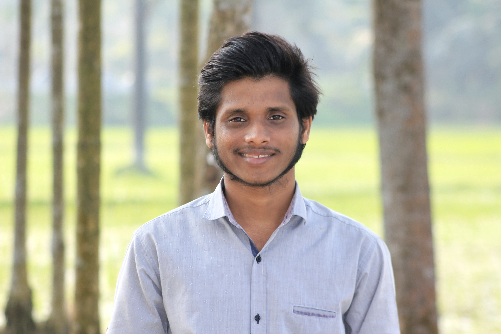

| Home | About | Portfolio | Gallery | Contact |
|  |
|
Hi I am Mahady Hasan Fahim I work as a Web developer and 2D animator professionally.I am a student at CSE. I am from Mymensing. My coding life starts in 2019. We stayed at home for covied.For passing My time, I choose Java. At that time, I wanted to know how an app Working my first computer is lenevo V310. It is my best friend now. It supports me in exploring everything. I enjoy writing stories, designing 3D models, and creating 2D animations with grease pincles. of Blender. I have a plan to create a digital medeia like a Facebook page and a YouTube channel for 2D animation. It's like a hobby. In my future career, I hope to work in cyber security. expert. For this plan, I am taking a course in BMIT PHP with Laravel Framework. It can pave the way to my goal. I have done a workshop on IEEE Internet-based ethical hacking for my dream carrier. Every day, I try to manage my time for coding. I can lead team. I have some projects with my team. We have a competitive programming group for solving problems. I've been the CR for my class since the first semester.It makes me a good leader. I love to play cricket and football. but I don't like to watch the match. I like to write short stories and poems.. |